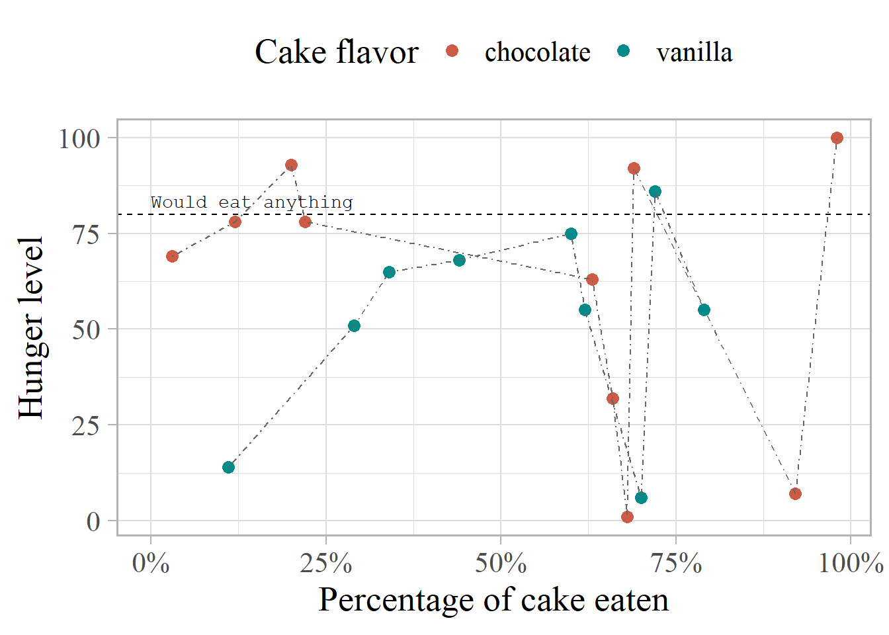
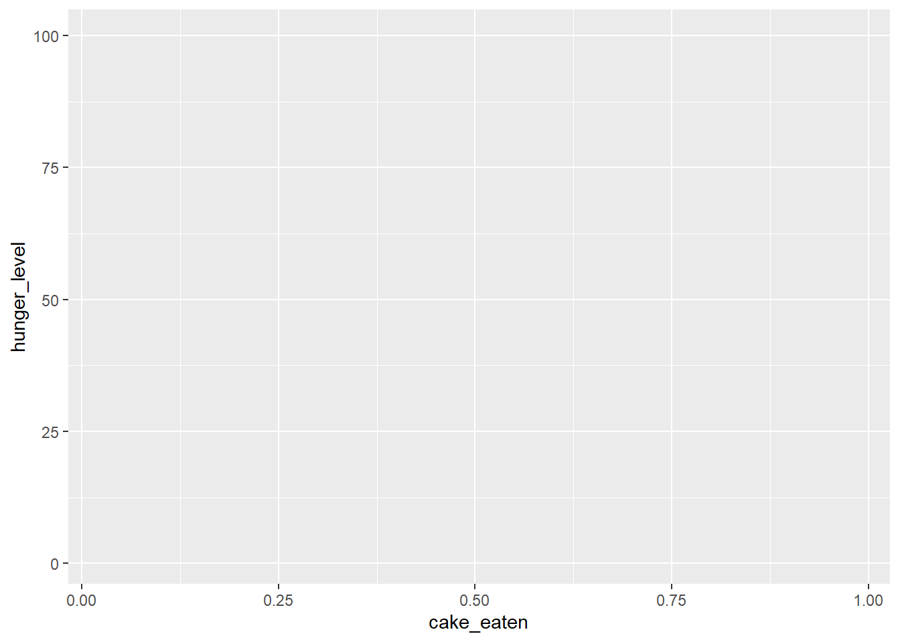
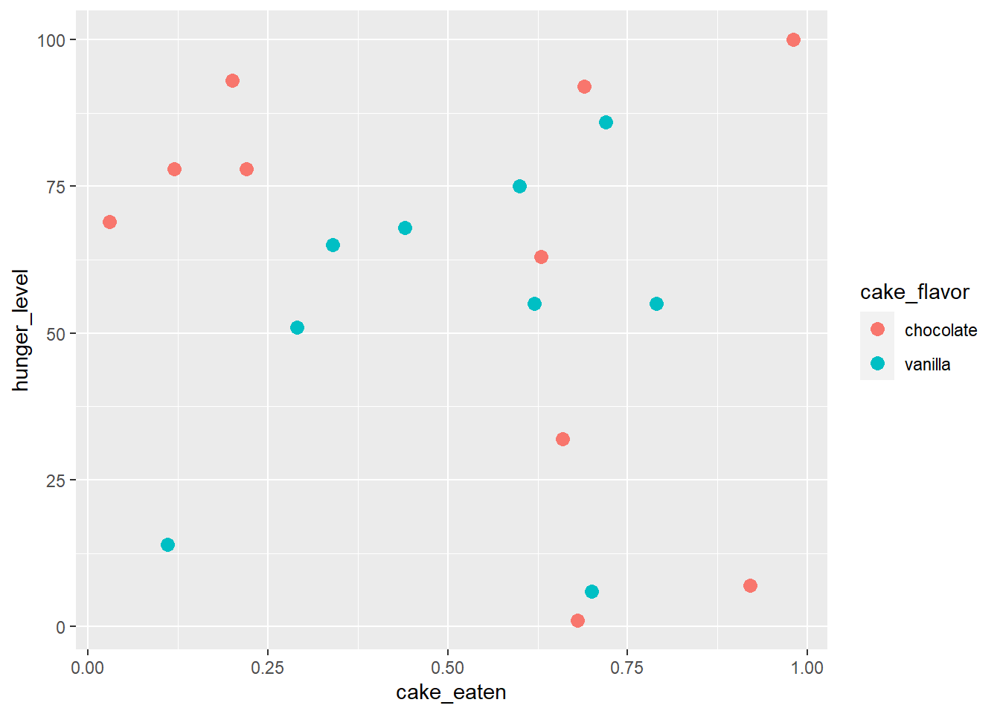
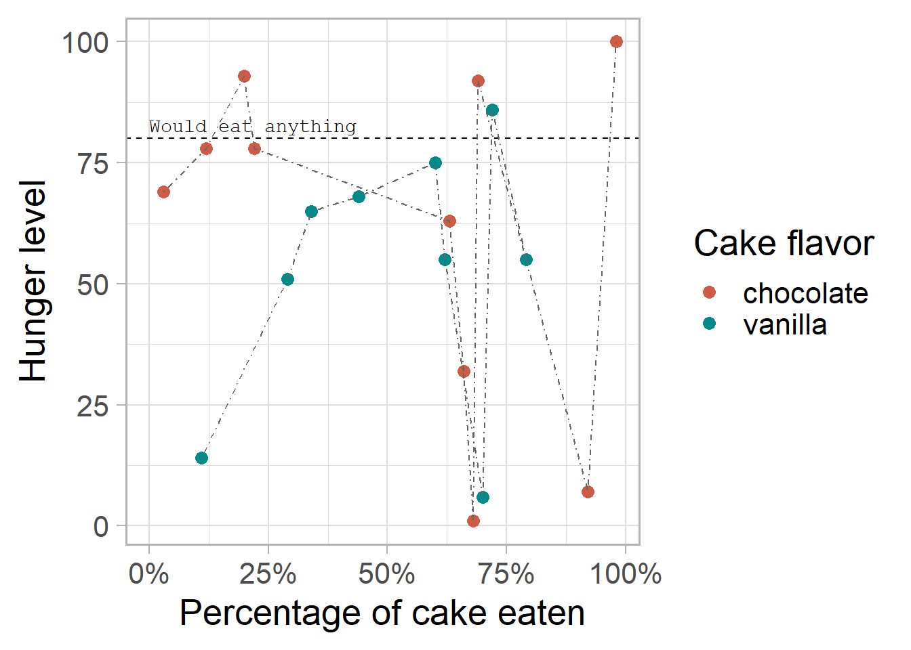

The Grammar of Graphics
Fourth assignment
The goal of this assignment is to gain some familiarity with the Grammar of Graphics, i.e. the principles behind {ggplot2} syntax. Hadley Wickham’s article is a good start if you’re interested in that philosophy, and you can also check the ggplot2 book.
It is not necessary to know all the functions in order to create graphics with {ggplot2} —I think the most important points are to understand the logic of the layers and to learn how to look up what you need. It’s ok if you need to google how to draw a barplot, how to change the position of the legend, or what the available colors and color palettes are… but you have to get comfortable looking things up, learning about package extensions and combining the functions into the plot you are thinking of.
1 Instructions
Create a branch for the assignment, e.g.
ggplot. You will work here and only move your changes tomainif and when you want to submit.-
Create a Quarto file.
Copy the code in the “setup” tab below to set up a dataset for plotting. This chunk must be hidden, with the option
include: false.Draw the plot in the “plot” tab below, but not in one go. Create a separate chunk per layer, as exemplified in Section 2. Each chunk should be cross-referenceable.
Using cross-references, describe the output of each new layer of the plot. What has changed and why? Again, see Section 2 for an example.
Render the Quarto file, move the changes to
main, push and let me know.
Don’t forget to add both a label and a caption to the figure!
1.1 Code to copy
Copy the following code as is in an invisible chunk in your Quarto file (use include: false in the options).
If you want, you can also write a small section in your file in which you print the table and/or describe what it represents! (If you don’t remember what I said you can make it up, as long as it kind of makes sense.)
Describing the table can be a good opportunity to practice inline code, e.g. `r nrow(cake_eaten)` to print the number of rows in the dataframe, or using other functions such as length(cake_eaten) to get the number of columns.
This is the final code for the plot you have to build, and the final output should look like the plot under the code. In total you should have at least 10 different plots: one for each of the layers!
ggplot(cake_eaten, aes(x = cake_eaten, y = hunger_level)) +
geom_point(aes(color = cake_flavor), size = 3) +
geom_hline(yintercept = 80, linetype = 2) +
geom_line(aes(group = cake_flavor), color = "gray40", linetype = 4) +
scale_color_manual(values = c("coral3", "darkcyan")) +
scale_x_continuous(labels = scales::label_percent()) +
labs(x = "Percentage of cake eaten", y = "Hunger level", color = "Cake flavor") +
annotate("text", x = 0, y = 80, label = "Would eat anything",
vjust = -0.6, hjust = 0, family = "mono") +
theme_light(base_size = 20) +
theme(legend.position = "top", text = element_text(family = "serif"))
The order of the layers is not crucial to the output. If the geom_line() layers goes before the geom_point() layer, it will be drawn before it (and therefore under it), but otherwise, it doesn’t change much in which order you do them. That said, it can be useful to respect a certain logical order –it’s just not necessary and sometimes it doesn’t make a difference. It won’t throw an error.
For the assignment, please keep the order, but you’re welcome to explore and experiment what happens if you change it.
2 Example
The text below exemplifies a bit of what the Quarto file should look like. The chunk options should not be visible (I made them visible here to help you) but the code should be accessible.
If you would like to hide the code and make it available on demand, use code-fold: true, either as an option in the chunks you want to apply it to or in the metadata YAML of the Quarto file.
Figure 1 shows the output of just calling ggplot() with the dataset and x and y aesthetics: a basic, gray canvas with default axis labels and range of values.
```{r}
#| label: fig-ggplot
#| fig-cap: "Output of the basic `ggplot()` call."
g <- ggplot(cake_eaten, aes(x = cake_eaten, y = hunger_level))
g
```
ggplot() call.Figure 2 shows the output of adding only a point geometry with geom_point(), additionally mapping the variable of cake flavor to the color of the points and setting the size of all points to 3. A legend with default label is automatically added.
code-fold: true so that code is only seen on demand.Code
```{r}
#| label: fig-point
#| fig-cap: Output after adding the points geometry.
#| code-fold: true
g <- g + geom_point(aes(color = cake_flavor), size = 3)
g
```
[After a few more plots…]
Figure 3 adds a complete theme called theme_light(), which…
```{r}
#| label: fig-theme-light
#| fig-cap: Output after adding a "light" theme.
g <- g + theme_light(base_size = 20)
g
```
3 Git workflow
git status # check that you're on main, nothing to commit...
git branch ggplot
git checkout ggplot
# work on your .qmd file, render
git status # check everything is fine
git add .
git commit -m "practice with ggplot"
# you may also make several commits as you add a figure, a table...
git checkout main
git status # check everything is fine. New files should not be there
git merge ggplot
# Now the .qmd file, the rendered file and the help files should be present
git push
# and send me a message!